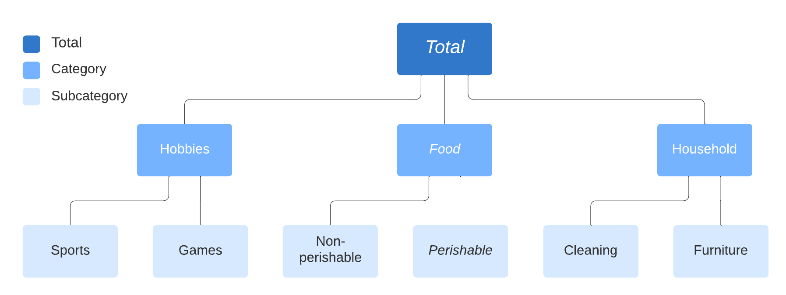
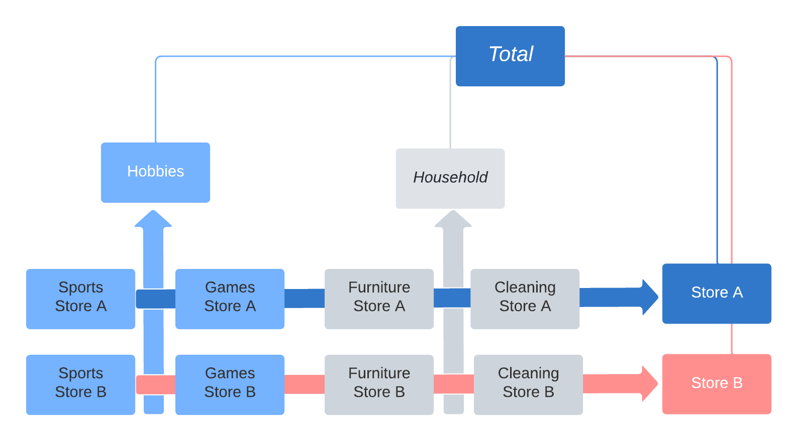

Hierarchical, Global, and Panel Forecasting with sktime#
Overview of this notebook#
introduction - hierarchical time series
hierarchical and panel data format in sktime
automated vectorization of forecasters and transformers
hierarchical reconciliation in sktime
hierarchical/global forecasting using summarization/reduction models, “M5 winner”
extender guide
contributor credits
[1]:
import warnings
warnings.filterwarnings("ignore")
Hierarchical time series#
Time series are often present in “hierarchical” form, example:

Examples include: * Product sales in different categories (e.g. M5 time series competition) * Tourism demand in different regions * Balance sheet structures across cost centers / accounts
Many hierarchical time series datasets can be found here: https://forecastingdata.org/ (access loader in development)
For literature see also: https://otexts.com/fpp2/hierarchical.html
A time series can also exhibit multiple independent hierarchies:

Representation of hierarchical and panel datatypes#
sktime distinguishes as abstract scientific data types for time series (=”scitypes”):
Seriestype = one time series (uni or multivariate)Paneltype = collection of multiple time series, flat hierarchyHierarchicaltype = hierarchical collection of time series, as above
Each scitype has multiple mtype representations.
For simplicity, we focus only on pandas.DataFrame based representations below.
[2]:
# import to retrieve examples
from sktime.datatypes import get_examples
In the "pd.DataFrame" mtype, time series are represented by an in-memory container obj: pandas.DataFrame as follows.
structure convention:
obj.indexmust be monotonous, and one ofInt64Index,RangeIndex,DatetimeIndex,PeriodIndex.variables: columns of
objcorrespond to different variablesvariable names: column names
obj.columnstime points: rows of
objcorrespond to different, distinct time pointstime index:
obj.indexis interpreted as a time index.capabilities: can represent multivariate series; can represent unequally spaced series
"pd.DataFrame" representation."a" and "b". Both are observed at the same four time points 0, 1, 2, 3.[3]:
get_examples(mtype="pd.DataFrame")[0]
[3]:
| a | |
|---|---|
| 0 | 1.0 |
| 1 | 4.0 |
| 2 | 0.5 |
| 3 | -3.0 |
"pd.DataFrame" representation."a" and "b". Both are observed at the same four time points 0, 1, 2, 3.[4]:
get_examples(mtype="pd.DataFrame")[1]
[4]:
| a | b | |
|---|---|---|
| 0 | 1.0 | 3.000000 |
| 1 | 4.0 | 7.000000 |
| 2 | 0.5 | 2.000000 |
| 3 | -3.0 | -0.428571 |
In the "pd-multiindex" mtype, time series panels are represented by an in-memory container obj: pandas.DataFrame as follows.
structure convention:
obj.indexmust be a pair multi-index of type(RangeIndex, t), wheretis one ofInt64Index,RangeIndex,DatetimeIndex,PeriodIndexand monotonous.instances: rows with the same
"instances"index correspond to the same instance; rows with different"instances"index correspond to different instances.instance index: the first element of pairs in
obj.indexis interpreted as an instance index.variables: columns of
objcorrespond to different variablesvariable names: column names
obj.columnstime points: rows of
objwith the same"timepoints"index correspond correspond to the same time point; rows ofobjwith different"timepoints"index correspond correspond to the different time points.time index: the second element of pairs in
obj.indexis interpreted as a time index.capabilities: can represent panels of multivariate series; can represent unequally spaced series; can represent panels of unequally supported series; cannot represent panels of series with different sets of variables.
Example of a panel of multivariate series in "pd-multiindex" mtype representation. The panel contains three multivariate series, with instance indices 0, 1, 2. All series have two variables with names "var_0", "var_1". All series are observed at three time points 0, 1, 2.
[5]:
get_examples(mtype="pd-multiindex")[0]
[5]:
| var_0 | var_1 | ||
|---|---|---|---|
| instances | timepoints | ||
| 0 | 0 | 1 | 4 |
| 1 | 2 | 5 | |
| 2 | 3 | 6 | |
| 1 | 0 | 1 | 4 |
| 1 | 2 | 55 | |
| 2 | 3 | 6 | |
| 2 | 0 | 1 | 42 |
| 1 | 2 | 5 | |
| 2 | 3 | 6 |
structure convention:
obj.indexmust be a 3 or more level multi-index of type(RangeIndex, ..., RangeIndex, t), wheretis one ofInt64Index,RangeIndex,DatetimeIndex,PeriodIndexand monotonous. We call the last index the “time-like” indexhierarchy level: rows with the same non-time-like indices correspond to the same hierarchy unit; rows with different non-time-like index combination correspond to different hierarchy unit.
hierarchy: the non-time-like indices in
obj.indexare interpreted as a hierarchy identifying index.variables: columns of
objcorrespond to different variablesvariable names: column names
obj.columnstime points: rows of
objwith the same"timepoints"index correspond correspond to the same time point; rows ofobjwith different"timepoints"index correspond correspond to the different time points.time index: the last element of tuples in
obj.indexis interpreted as a time index.capabilities: can represent hierarchical series; can represent unequally spaced series; can represent unequally supported hierarchical series; cannot represent hierarchical series with different sets of variables.
[6]:
X = get_examples(mtype="pd_multiindex_hier")[0]
X
[6]:
| var_0 | var_1 | |||
|---|---|---|---|---|
| foo | bar | timepoints | ||
| a | 0 | 0 | 1 | 4 |
| 1 | 2 | 5 | ||
| 2 | 3 | 6 | ||
| 1 | 0 | 1 | 4 | |
| 1 | 2 | 55 | ||
| 2 | 3 | 6 | ||
| 2 | 0 | 1 | 42 | |
| 1 | 2 | 5 | ||
| 2 | 3 | 6 | ||
| b | 0 | 0 | 1 | 4 |
| 1 | 2 | 5 | ||
| 2 | 3 | 6 | ||
| 1 | 0 | 1 | 4 | |
| 1 | 2 | 55 | ||
| 2 | 3 | 6 | ||
| 2 | 0 | 1 | 42 | |
| 1 | 2 | 5 | ||
| 2 | 3 | 6 |
[7]:
X.index.get_level_values(level=-1)
Int64Index([0, 1, 2, 0, 1, 2, 0, 1, 2, 0, 1, 2, 0, 1, 2, 0, 1, 2], dtype='int64', name='timepoints')
Automated vectorization (casting) of forecasters and transformers#
Many transformers and forecasters implemented for single series
sktime automatically vectorizes/”up-casts” them to hierarchical data
“apply by individual series/panel in the hierarchical structure”
constructing a hierarchical time series:
[8]:
from sktime.utils._testing.hierarchical import _make_hierarchical
y = _make_hierarchical()
y
[8]:
| c0 | |||
|---|---|---|---|
| h0 | h1 | time | |
| h0_0 | h1_0 | 2000-01-01 | 1.954666 |
| 2000-01-02 | 4.749032 | ||
| 2000-01-03 | 3.116761 | ||
| 2000-01-04 | 3.951981 | ||
| 2000-01-05 | 3.789698 | ||
| ... | ... | ... | ... |
| h0_1 | h1_3 | 2000-01-08 | 2.044946 |
| 2000-01-09 | 2.609192 | ||
| 2000-01-10 | 4.107474 | ||
| 2000-01-11 | 3.194098 | ||
| 2000-01-12 | 3.712494 |
96 rows × 1 columns
[9]:
from sktime.forecasting.arima import ARIMA
forecaster = ARIMA()
y_pred = forecaster.fit(y, fh=[1, 2]).predict()
y_pred
[9]:
| c0 | |||
|---|---|---|---|
| h0 | h1 | ||
| h0_0 | h1_0 | 2000-01-13 | 2.972898 |
| 2000-01-14 | 2.990252 | ||
| h1_1 | 2000-01-13 | 3.108714 | |
| 2000-01-14 | 3.641990 | ||
| h1_2 | 2000-01-13 | 3.263830 | |
| 2000-01-14 | 3.040534 | ||
| h1_3 | 2000-01-13 | 3.186436 | |
| 2000-01-14 | 3.031391 | ||
| h0_1 | h1_0 | 2000-01-13 | 2.483968 |
| 2000-01-14 | 2.568648 | ||
| h1_1 | 2000-01-13 | 2.583254 | |
| 2000-01-14 | 2.591526 | ||
| h1_2 | 2000-01-13 | 3.114990 | |
| 2000-01-14 | 3.078702 | ||
| h1_3 | 2000-01-13 | 2.979505 | |
| 2000-01-14 | 3.029302 |
forecasters_ attributepandas.DataFrame in the same format as the hierarchy levels, and fitted forecasters insidetransformers_)[10]:
forecaster.forecasters_
[10]:
| forecasters | ||
|---|---|---|
| h0 | h1 | |
| h0_0 | h1_0 | ARIMA() |
| h1_1 | ARIMA() | |
| h1_2 | ARIMA() | |
| h1_3 | ARIMA() | |
| h0_1 | h1_0 | ARIMA() |
| h1_1 | ARIMA() | |
| h1_2 | ARIMA() | |
| h1_3 | ARIMA() |
to access or inspect individual forecasters, access elements of the forecasters_ data frame:
[11]:
forecaster.forecasters_.iloc[0, 0].summary()
[11]:
| Dep. Variable: | y | No. Observations: | 12 |
|---|---|---|---|
| Model: | SARIMAX(1, 0, 0) | Log Likelihood | -15.852 |
| Date: | Mon, 11 Apr 2022 | AIC | 37.704 |
| Time: | 06:55:46 | BIC | 39.159 |
| Sample: | 0 | HQIC | 37.165 |
| - 12 | |||
| Covariance Type: | opg |
| coef | std err | z | P>|z| | [0.025 | 0.975] | |
|---|---|---|---|---|---|---|
| intercept | 2.9242 | 1.285 | 2.275 | 0.023 | 0.405 | 5.443 |
| ar.L1 | 0.0222 | 0.435 | 0.051 | 0.959 | -0.831 | 0.876 |
| sigma2 | 0.8221 | 0.676 | 1.217 | 0.224 | -0.502 | 2.146 |
| Ljung-Box (L1) (Q): | 0.00 | Jarque-Bera (JB): | 1.13 |
|---|---|---|---|
| Prob(Q): | 0.99 | Prob(JB): | 0.57 |
| Heteroskedasticity (H): | 0.52 | Skew: | 0.55 |
| Prob(H) (two-sided): | 0.55 | Kurtosis: | 1.98 |
Warnings:
[1] Covariance matrix calculated using the outer product of gradients (complex-step).
auto-vectorization is also performed for probabilistic forecasts (see notebook 2):
[12]:
forecaster.predict_interval()
[12]:
| Coverage | ||||
|---|---|---|---|---|
| 0.9 | ||||
| lower | upper | |||
| h0 | h1 | |||
| h0_0 | h1_0 | 2000-01-13 | 1.481552 | 4.464243 |
| 2000-01-14 | 1.498538 | 4.481966 | ||
| h1_1 | 2000-01-13 | 1.807990 | 4.409437 | |
| 2000-01-14 | 2.247328 | 5.036651 | ||
| h1_2 | 2000-01-13 | 1.630340 | 4.897320 | |
| 2000-01-14 | 1.378545 | 4.702523 | ||
| h1_3 | 2000-01-13 | 2.001023 | 4.371850 | |
| 2000-01-14 | 1.785088 | 4.277694 | ||
| h0_1 | h1_0 | 2000-01-13 | 1.057036 | 3.910900 |
| 2000-01-14 | 1.121161 | 4.016136 | ||
| h1_1 | 2000-01-13 | 1.825167 | 3.341341 | |
| 2000-01-14 | 1.818342 | 3.364710 | ||
| h1_2 | 2000-01-13 | 1.521553 | 4.708427 | |
| 2000-01-14 | 1.484741 | 4.672664 | ||
| h1_3 | 2000-01-13 | 1.826515 | 4.132494 | |
| 2000-01-14 | 1.873655 | 4.184949 | ||
which level a forecaster/natively implements and when vectorization occurs is determined by the “inner mtype” attributes.
For forecasters, inspect y_inner_mtype, this is a list of internally supported machine types:
[13]:
forecaster.get_tag("y_inner_mtype")
[13]:
'pd.Series'
Series level mtype. For a register of all mtype codes and their corresponding scitype (series, panel or hierarchical),sktime.datatypes.MTYPE_REGISTER (convert to pandas.DataFrame for pretty-printing)[14]:
import pandas as pd
from sktime.datatypes import MTYPE_REGISTER
pd.DataFrame(MTYPE_REGISTER)
[14]:
| 0 | 1 | 2 | |
|---|---|---|---|
| 0 | pd.Series | Series | pd.Series representation of a univariate series |
| 1 | pd.DataFrame | Series | pd.DataFrame representation of a uni- or multi... |
| 2 | np.ndarray | Series | 2D numpy.ndarray with rows=samples, cols=varia... |
| 3 | nested_univ | Panel | pd.DataFrame with one column per variable, pd.... |
| 4 | numpy3D | Panel | 3D np.array of format (n_instances, n_columns,... |
| 5 | numpyflat | Panel | WARNING: only for internal use, not a fully su... |
| 6 | pd-multiindex | Panel | pd.DataFrame with multi-index (instances, time... |
| 7 | pd-wide | Panel | pd.DataFrame in wide format, cols = (instance*... |
| 8 | pd-long | Panel | pd.DataFrame in long format, cols = (index, ti... |
| 9 | df-list | Panel | list of pd.DataFrame |
| 10 | pd_multiindex_hier | Hierarchical | pd.DataFrame with MultiIndex |
| 11 | alignment | Alignment | pd.DataFrame in alignment format, values are i... |
| 12 | alignment_loc | Alignment | pd.DataFrame in alignment format, values are l... |
| 13 | pd_DataFrame_Table | Table | pd.DataFrame representation of a data table |
| 14 | numpy1D | Table | 1D np.narray representation of a univariate table |
| 15 | numpy2D | Table | 2D np.narray representation of a univariate table |
| 16 | pd_Series_Table | Table | pd.Series representation of a data table |
| 17 | list_of_dict | Table | list of dictionaries with primitive entries |
| 18 | pred_interval | Proba | predictive intervals |
| 19 | pred_quantiles | Proba | quantile predictions |
| 20 | pred_var | Proba | variance predictions |
roadmap items:
interfacing and implementing common methods with native hierarchical support
ARIMA using hierarchy factors, GEE, mixed effects
wrappers for “using hierarchy levels” as covariates or exogeneous features
full vectorization over variables to render univariate forecasters multivariate
contributions are appreciated!
Hierarchical reconciliation#
Bottom up reconciliation works by producing only forecasts at the lowest level and then adding up to totals across all higher levels.
* Arguably the most simple of all algorithms to reconcile across hierarchies.
* Advantages: easy to implement
* Disadvantages: lower levels of hierarchy are prone to excess volatility. This excess volatility is aggregated up, often producing much less accurate top level forecasts.
Top down reconciliation works by producing top level forecasts and breaking them down to the lowest level based e.g. on relative proportions of those lower levels.
* Advantages: still easy to implement, top level is stable
* Disadvantages: peculiarities of lower levels of hierarchy ignored
Optimal forecast reconciliation works by producing forecasts at all levels of the hierarchy and adjusting all of them in a way that seeks to minimize the forecast errors
* Advantages: often found to be most accurate implementation
* Disadvantages: more difficult to implement
sktime provides functionality for reconciliation:
data container convention for node-wise aggregates
functionality to compute node-wise aggregates -
Aggregatorcan be used for bottom-up reconciliation
transformer implementing reconiliation logic -
Reconcilerimplements top-down reconciliation
implements transformer-like optimal forecast reconciliation
sktime uses a special case of the pd_multiindex_hier format to store node-wise aggregates:
a
__totalindex element in an instance (non-time-like) level indicates summation over all instances below that levelthe
__totalindex element is reserved and cannot be used for anything elseentries below a
__totalindex element are sums of entries over all other instances in the same levels where a__totalelement is found
The node-wise aggregated format can be obtained by applying the Aggregator transformer.
In a pipeline with non-aggregate dinput, this allows making forecasts by totals.
[16]:
from sktime.datatypes import get_examples
y_hier = get_examples("pd_multiindex_hier")[1]
y_hier
[16]:
| var_0 | |||
|---|---|---|---|
| foo | bar | timepoints | |
| a | 0 | 0 | 1 |
| 1 | 2 | ||
| 2 | 3 | ||
| 1 | 0 | 1 | |
| 1 | 2 | ||
| 2 | 3 | ||
| 2 | 0 | 1 | |
| 1 | 2 | ||
| 2 | 3 | ||
| b | 0 | 0 | 1 |
| 1 | 2 | ||
| 2 | 3 | ||
| 1 | 0 | 1 | |
| 1 | 2 | ||
| 2 | 3 | ||
| 2 | 0 | 1 | |
| 1 | 2 | ||
| 2 | 3 |
[17]:
from sktime.transformations.hierarchical.aggregate import Aggregator
Aggregator().fit_transform(y_hier)
[17]:
| var_0 | |||
|---|---|---|---|
| foo | bar | timepoints | |
| __total | __total | 0 | 6 |
| 1 | 12 | ||
| 2 | 18 | ||
| a | 0 | 0 | 1 |
| 1 | 2 | ||
| 2 | 3 | ||
| 1 | 0 | 1 | |
| 1 | 2 | ||
| 2 | 3 | ||
| 2 | 0 | 1 | |
| 1 | 2 | ||
| 2 | 3 | ||
| __total | 0 | 3 | |
| 1 | 6 | ||
| 2 | 9 | ||
| b | 0 | 0 | 1 |
| 1 | 2 | ||
| 2 | 3 | ||
| 1 | 0 | 1 | |
| 1 | 2 | ||
| 2 | 3 | ||
| 2 | 0 | 1 | |
| 1 | 2 | ||
| 2 | 3 | ||
| __total | 0 | 3 | |
| 1 | 6 | ||
| 2 | 9 |
If used at the start of a pipeline, forecasts are made for node __total-s as well as individual instances.
Note: in general, this does not result in a reconciled forecast, i.e., forecast totals will not add up.
[18]:
from sktime.forecasting.naive import NaiveForecaster
pipeline_to_forecast_totals = Aggregator() * NaiveForecaster()
pipeline_to_forecast_totals.fit(y_hier, fh=[1, 2])
pipeline_to_forecast_totals.predict()
[18]:
| 0 | |||
|---|---|---|---|
| foo | bar | ||
| __total | __total | 3 | 18 |
| 4 | 18 | ||
| a | 0 | 3 | 3 |
| 4 | 3 | ||
| 1 | 3 | 3 | |
| 4 | 3 | ||
| 2 | 3 | 3 | |
| 4 | 3 | ||
| __total | 3 | 9 | |
| 4 | 9 | ||
| b | 0 | 3 | 3 |
| 4 | 3 | ||
| 1 | 3 | 3 | |
| 4 | 3 | ||
| 2 | 3 | 3 | |
| 4 | 3 | ||
| __total | 3 | 9 | |
| 4 | 9 |
If used at the end of a pipeline, forecasts are reconciled bottom-up.
That will result in a reconciled forecast, although bottom-up may not be the method of choice.
[19]:
from sktime.forecasting.naive import NaiveForecaster
pipeline_to_forecast_totals = NaiveForecaster() * Aggregator()
pipeline_to_forecast_totals.fit(y_hier, fh=[1, 2])
pipeline_to_forecast_totals.predict()
[19]:
| 0 | |||
|---|---|---|---|
| foo | bar | ||
| __total | __total | 3 | 18 |
| 4 | 18 | ||
| a | 0 | 3 | 3 |
| 4 | 3 | ||
| 1 | 3 | 3 | |
| 4 | 3 | ||
| 2 | 3 | 3 | |
| 4 | 3 | ||
| __total | 3 | 9 | |
| 4 | 9 | ||
| b | 0 | 3 | 3 |
| 4 | 3 | ||
| 1 | 3 | 3 | |
| 4 | 3 | ||
| 2 | 3 | 3 | |
| 4 | 3 | ||
| __total | 3 | 9 | |
| 4 | 9 |
For transformer-like reconciliation, use the Reconciler. It supports advanced techniques such as OLS and WLS:
[20]:
from sktime.transformations.hierarchical.reconcile import Reconciler
pipeline_with_reconciliation = (
Aggregator() * NaiveForecaster() * Reconciler(method="ols")
)
[21]:
pipeline_to_forecast_totals.fit(y_hier, fh=[1, 2])
pipeline_to_forecast_totals.predict()
[21]:
| 0 | |||
|---|---|---|---|
| foo | bar | ||
| __total | __total | 3 | 18 |
| 4 | 18 | ||
| a | 0 | 3 | 3 |
| 4 | 3 | ||
| 1 | 3 | 3 | |
| 4 | 3 | ||
| 2 | 3 | 3 | |
| 4 | 3 | ||
| __total | 3 | 9 | |
| 4 | 9 | ||
| b | 0 | 3 | 3 |
| 4 | 3 | ||
| 1 | 3 | 3 | |
| 4 | 3 | ||
| 2 | 3 | 3 | |
| 4 | 3 | ||
| __total | 3 | 9 | |
| 4 | 9 |
Roadmap items:
reconciliation of wrapper type
reconciliation & global forecasting
probabilistic reconciliation
Global/panel forecasting - introduction#
Also called “panel forecasting” for homogeneous/contemporaneous index sets.
Why does global forecasting matter? * In practice, we often have time series of limited range * Estimation is difficult, and we cannot model complex dependencies * Assumption of global forecasting: We can observe the identical data generating process (DGP) multiple times * Non-identical DGPs can be fine too, as long as the degree of dissimilarity is captured by exogeneous information * Now we have much more information and can estimate more reliably and more complex models (caveat: unless complexity is purely driven by time dynamics)
As a result of these advantages, global forecasting models have been very successful in competition, e.g. * Rossmann Store Sales * Walmart Sales in Stormy Weather * M5 competition
Many business problems in practice are essentially global forecasting problem - often also reflecting hierarchical information (see above) * Product sales in different categories (e.g. M5 time series competition) * Balance sheet structures across cost centers / accounts * Dynamics of pandemics observed at different points in time
Distinction to multivariate forecasting * Multivariate forecasting focuses on modeling interdependence between time series * Global can model interdependence, but focus lies on enhancing observation space
Implementation in sktime * Multivariate forecasting models are supported in sktime via ? VAR…* * Global forecasting
For the following example we will use the "pd-multiindex" representation of the "Panel" scitype (see above)
Row multiindex level 0 is the unique identifier for the individual time series, level 1 contains the time index.
[22]:
import pandas as pd
from sklearn.ensemble import RandomForestRegressor
from sklearn.pipeline import make_pipeline
from sktime.forecasting.compose import make_reduction
from sktime.split import temporal_train_test_split
from sktime.transformations.series.date import DateTimeFeatures
pd.options.mode.chained_assignment = None
pd.set_option("display.max_columns", None)
# %%
# Load M5 Data and prepare
y = pd.read_pickle("global_fc/y.pkl")
X = pd.read_pickle("global_fc/X.pkl")
y/X are based on the M5 competition. The data features sales of products in different stores, different states and different product categories.
For a detailed analysis of the competition please take a look at the paper “M5 accuracy competition: Results, findings, and conclusions”.
https://doi.org/10.1016/j.ijforecast.2021.11.013
You can see a glimpse of the data here:
[23]:
print(y.head())
print(X.head())
y
instances timepoints
1 2016-03-15 756.67
2016-03-16 679.13
2016-03-17 633.40
2016-03-18 1158.04
2016-03-19 914.24
dept_id cat_id store_id state_id event_name_1 \
instances timepoints
1 2016-03-15 1 1 10 3 1
2016-03-16 1 1 10 3 1
2016-03-17 1 1 10 3 7
2016-03-18 1 1 10 3 1
2016-03-19 1 1 10 3 1
event_type_1 event_name_2 event_type_2 snap \
instances timepoints
1 2016-03-15 1 1 1 3
2016-03-16 1 1 1 0
2016-03-17 3 1 1 0
2016-03-18 1 1 1 0
2016-03-19 1 1 1 0
no_stock_days
instances timepoints
1 2016-03-15 0
2016-03-16 0
2016-03-17 0
2016-03-18 0
2016-03-19 0
time series grouped via the instances argument in the first column = Panel
focus on modeling individual products
hierarchical information is provided as exgoneous information.
For the M5 competition, winning solution used exogeneous features about the hierarchies like "dept_id", "store_id" etc. to capture similarities and dissimilarities of the products. Other features include holiday events and snap days (specific assistance program of US social security paid on certain days).
temporal_train_test_split.[24]:
y_train, y_test, X_train, X_test = temporal_train_test_split(y, X)
print(y_train.head(5))
print(y_test.head(5))
| y | ||
|---|---|---|
| instances | timepoints | |
| 1 | 2016-03-15 | 756.67 |
| 2016-03-16 | 679.13 | |
| 2016-03-17 | 633.40 | |
| 2016-03-18 | 1158.04 | |
| 2016-03-19 | 914.24 |
| y | ||
|---|---|---|
| instances | timepoints | |
| 1 | 2016-04-14 | 874.57 |
| 2016-04-15 | 895.29 | |
| 2016-04-16 | 1112.63 | |
| 2016-04-17 | 1014.86 | |
| 2016-04-18 | 691.91 |
both y and X are split in the same way, and hierarchy structures are preserved.
Rationale for tree based models#
Tree ensembles exploit complex non-linear relationships / dependencies between time series and covariates.
In univariate time series forecasting, tree based models often do not perform well due to lack of data.
Due to large effective sample sizes in global forecasting , tree ensembles can become a good choice (e.g., 42,840 time series in the M5 competition).
sktime can interface any sklearn compatible model via reduction, e.g., RandomForestRegressor.
[25]:
regressor = make_pipeline(
RandomForestRegressor(random_state=1),
)
Caveat: reduction applies a supervised regressor to a time series, i.e., to a task for which they were not originally designed.
"WindowSummarizer" can be used to generate features useful for time series forecasting,[26]:
import pandas as pd
from sktime.forecasting.base import ForecastingHorizon
from sktime.forecasting.compose import ForecastingPipeline
from sktime.transformations.series.summarize import WindowSummarizer
kwargs = {
"lag_feature": {
"lag": [1],
"mean": [[1, 3], [3, 6]],
"std": [[1, 4]],
}
}
transformer = WindowSummarizer(**kwargs)
y_transformed = transformer.fit_transform(y_train)
y_transformed.head(10)
| y_lag_1 | y_mean_1_3 | y_mean_3_6 | y_std_1_4 | ||
|---|---|---|---|---|---|
| instances | timepoints | ||||
| 1 | 2016-03-15 | NaN | NaN | NaN | NaN |
| 2016-03-16 | 756.67 | NaN | NaN | NaN | |
| 2016-03-17 | 679.13 | NaN | NaN | NaN | |
| 2016-03-18 | 633.40 | 689.733333 | NaN | NaN | |
| 2016-03-19 | 1158.04 | 823.523333 | NaN | 239.617572 | |
| 2016-03-20 | 914.24 | 901.893333 | NaN | 241.571143 | |
| 2016-03-21 | 965.27 | 1012.516667 | NaN | 216.690775 | |
| 2016-03-22 | 630.77 | 836.760000 | NaN | 217.842052 | |
| 2016-03-23 | 702.79 | 766.276667 | 851.125000 | 161.669232 | |
| 2016-03-24 | 728.15 | 687.236667 | 830.141667 | 145.007117 |
The notation "mean": [[1, 3]] (captured in the column "y_mean_1_3") is read as:
summarization function "mean": [[1, 3]] is applied to:
window of length 3
start (inclusive) is lagged by one period
Visualization:
window = [1, 3], means a lag of 1 and window_length of 3, selecting the three last days (exclusive z).Summarization is done across windows like this:
By default, "WindowSummarizer" uses pandas rolling window functions to allow for a speedy generation of features. * “sum”, * “mean”, * “median”, * “std”, * “var”, * “kurt”, * “min”, * “max”, * “corr”, * “cov”, * “skew”, * “sem”
typically very fast since optimized for rolling, grouped operations
In the M5 competition, arguably the most relevant features were:
mean calculations to capture level shifts, e.g. last week sales, sales of the week prior to the last month etc.
standard deviation to capture increases / decreases in volatility in sales, and how it impacts future sales
rolling skewness / kurtosis calculations, to capture changes in store sales tendencies.
various different calculations to capture periods of zero sales (e.g. out of stock scenarios)
WindowSummarizer can also be provided with arbitrary summarizer functions.Example: function count_gt130 to count how many observations lie above the threshold of 130 within a window of length 3, lagged by 2 periods.
[27]:
import numpy as np
def count_gt130(x):
"""Count how many observations lie above threshold 130."""
return np.sum((x > 700)[::-1])
kwargs = {
"lag_feature": {
"lag": [1],
count_gt130: [[2, 3]],
"std": [[1, 4]],
}
}
transformer = WindowSummarizer(**kwargs)
y_transformed = transformer.fit_transform(y_train)
y_transformed.head(10)
| y_lag_1 | y_count_gt130_2_3 | y_std_1_4 | ||
|---|---|---|---|---|
| instances | timepoints | |||
| 1 | 2016-03-15 | NaN | NaN | NaN |
| 2016-03-16 | 756.67 | NaN | NaN | |
| 2016-03-17 | 679.13 | NaN | NaN | |
| 2016-03-18 | 633.40 | NaN | NaN | |
| 2016-03-19 | 1158.04 | 1.0 | 239.617572 | |
| 2016-03-20 | 914.24 | 1.0 | 241.571143 | |
| 2016-03-21 | 965.27 | 2.0 | 216.690775 | |
| 2016-03-22 | 630.77 | 3.0 | 217.842052 | |
| 2016-03-23 | 702.79 | 2.0 | 161.669232 | |
| 2016-03-24 | 728.15 | 2.0 | 145.007117 |
Above applies "WindowSummarizer" to the forecasting targey y.
To apply "WindowSummarizer" to columns in X, use "WindowSummarizer" within a "ForecastingPipeline" and specify "target_cols".
In the M5 competition, lagging of exogeneous features was especially useful for lags around holiday dummies (often sales are affected for a few days before and after major holidays) as well as changes in item prices (discounts as well as persistent price changes)
[28]:
from sktime.datasets import load_longley
from sktime.forecasting.naive import NaiveForecaster
y_ll, X_ll = load_longley()
y_train_ll, y_test_ll, X_train_ll, X_test_ll = temporal_train_test_split(y_ll, X_ll)
fh = ForecastingHorizon(X_test_ll.index, is_relative=False)
# Example transforming only X
pipe = ForecastingPipeline(
steps=[
("a", WindowSummarizer(n_jobs=1, target_cols=["POP", "GNPDEFL"])),
("b", WindowSummarizer(n_jobs=1, target_cols=["GNP"], **kwargs)),
("forecaster", NaiveForecaster(strategy="drift")),
]
)
pipe_return = pipe.fit(y_train_ll, X_train_ll)
y_pred1 = pipe_return.predict(fh=fh, X=X_test_ll)
y_pred1
1959 67075.727273
1960 67638.454545
1961 68201.181818
1962 68763.909091
Freq: A-DEC, dtype: float64
WindowSummarizer as a single transformer within make_reduction.In this case, window_length is inferred from the WindowSummarizer and need not be passed to make_reduction.
[29]:
forecaster = make_reduction(
regressor,
transformers=[WindowSummarizer(**kwargs, n_jobs=1)],
window_length=None,
strategy="recursive",
pooling="global",
)
Concepts relating to calendar seasonalities need to be provided by means of feature engineering to most models. Examples:
day of the week effects historically observed for stock prices (prices on Fridays used to differ from Monday prices).
used car prices being higher in spring than in summer
spendings at the beginning of the month differing from end of month due to salary effects.
Calendar seasonalities can be modeled by means of dummy variables or fourier terms. As a rule of thumb, use dummy variables for discontinuous effects and fourier/period/seasonality terms when you believe there is a certain degree of smoothness in the seasonality.
sktime supports calendar dummy features via the DateTimeFeatures transformer. Manually specify the desired seasonality, or provide base frequency of the time series (daily, weekly etc.) and the desired complexity (few vs many features), DateTimeFeatures can infer sensible seasonality.
[30]:
transformer = DateTimeFeatures(ts_freq="D")
X_hat = transformer.fit_transform(X_train)
new_cols = [i for i in X_hat if i not in X_train.columns]
X_hat[new_cols]
[30]:
| year | month | weekday | ||
|---|---|---|---|---|
| instances | timepoints | |||
| 1 | 2016-03-15 | 2016 | 3 | 1 |
| 2016-03-16 | 2016 | 3 | 2 | |
| 2016-03-17 | 2016 | 3 | 3 | |
| 2016-03-18 | 2016 | 3 | 4 | |
| 2016-03-19 | 2016 | 3 | 5 | |
| 2016-03-20 | 2016 | 3 | 6 | |
| 2016-03-21 | 2016 | 3 | 0 | |
| 2016-03-22 | 2016 | 3 | 1 | |
| 2016-03-23 | 2016 | 3 | 2 | |
| 2016-03-24 | 2016 | 3 | 3 | |
| 2016-03-25 | 2016 | 3 | 4 | |
| 2016-03-26 | 2016 | 3 | 5 | |
| 2016-03-27 | 2016 | 3 | 6 | |
| 2016-03-28 | 2016 | 3 | 0 | |
| 2016-03-29 | 2016 | 3 | 1 | |
| 2016-03-30 | 2016 | 3 | 2 | |
| 2016-03-31 | 2016 | 3 | 3 | |
| 2016-04-01 | 2016 | 4 | 4 | |
| 2016-04-02 | 2016 | 4 | 5 | |
| 2016-04-03 | 2016 | 4 | 6 | |
| 2016-04-04 | 2016 | 4 | 0 | |
| 2016-04-05 | 2016 | 4 | 1 | |
| 2016-04-06 | 2016 | 4 | 2 | |
| 2016-04-07 | 2016 | 4 | 3 | |
| 2016-04-08 | 2016 | 4 | 4 | |
| 2016-04-09 | 2016 | 4 | 5 | |
| 2016-04-10 | 2016 | 4 | 6 | |
| 2016-04-11 | 2016 | 4 | 0 | |
| 2016-04-12 | 2016 | 4 | 1 | |
| 2016-04-13 | 2016 | 4 | 2 | |
| 2 | 2016-03-15 | 2016 | 3 | 1 |
| 2016-03-16 | 2016 | 3 | 2 | |
| 2016-03-17 | 2016 | 3 | 3 | |
| 2016-03-18 | 2016 | 3 | 4 | |
| 2016-03-19 | 2016 | 3 | 5 | |
| 2016-03-20 | 2016 | 3 | 6 | |
| 2016-03-21 | 2016 | 3 | 0 | |
| 2016-03-22 | 2016 | 3 | 1 | |
| 2016-03-23 | 2016 | 3 | 2 | |
| 2016-03-24 | 2016 | 3 | 3 | |
| 2016-03-25 | 2016 | 3 | 4 | |
| 2016-03-26 | 2016 | 3 | 5 | |
| 2016-03-27 | 2016 | 3 | 6 | |
| 2016-03-28 | 2016 | 3 | 0 | |
| 2016-03-29 | 2016 | 3 | 1 | |
| 2016-03-30 | 2016 | 3 | 2 | |
| 2016-03-31 | 2016 | 3 | 3 | |
| 2016-04-01 | 2016 | 4 | 4 | |
| 2016-04-02 | 2016 | 4 | 5 | |
| 2016-04-03 | 2016 | 4 | 6 | |
| 2016-04-04 | 2016 | 4 | 0 | |
| 2016-04-05 | 2016 | 4 | 1 | |
| 2016-04-06 | 2016 | 4 | 2 | |
| 2016-04-07 | 2016 | 4 | 3 | |
| 2016-04-08 | 2016 | 4 | 4 | |
| 2016-04-09 | 2016 | 4 | 5 | |
| 2016-04-10 | 2016 | 4 | 6 | |
| 2016-04-11 | 2016 | 4 | 0 | |
| 2016-04-12 | 2016 | 4 | 1 | |
| 2016-04-13 | 2016 | 4 | 2 |
DateTimeFeatures supports the following frequencies: * Y - year * Q - quarter * M - month * W - week * D - day * H - hour * T - minute * S - second * L - millisecond
You can specify the manual generation of dummy features with the notation e.g. “day_of_month”, “day_of_week”, “week_of_quarter”.
[31]:
transformer = DateTimeFeatures(manual_selection=["week_of_month", "day_of_quarter"])
X_hat = transformer.fit_transform(X_train)
new_cols = [i for i in X_hat if i not in X_train.columns]
X_hat[new_cols]
| day_of_quarter | week_of_month | ||
|---|---|---|---|
| instances | timepoints | ||
| 1 | 2016-03-15 | 75 | 3 |
| 2016-03-16 | 76 | 3 | |
| 2016-03-17 | 77 | 3 | |
| 2016-03-18 | 78 | 3 | |
| 2016-03-19 | 79 | 3 | |
| 2016-03-20 | 80 | 3 | |
| 2016-03-21 | 81 | 3 | |
| 2016-03-22 | 82 | 4 | |
| 2016-03-23 | 83 | 4 | |
| 2016-03-24 | 84 | 4 | |
| 2016-03-25 | 85 | 4 | |
| 2016-03-26 | 86 | 4 | |
| 2016-03-27 | 87 | 4 | |
| 2016-03-28 | 88 | 4 | |
| 2016-03-29 | 89 | 5 | |
| 2016-03-30 | 90 | 5 | |
| 2016-03-31 | 91 | 5 | |
| 2016-04-01 | 1 | 1 | |
| 2016-04-02 | 2 | 1 | |
| 2016-04-03 | 3 | 1 | |
| 2016-04-04 | 4 | 1 | |
| 2016-04-05 | 5 | 1 | |
| 2016-04-06 | 6 | 1 | |
| 2016-04-07 | 7 | 1 | |
| 2016-04-08 | 8 | 2 | |
| 2016-04-09 | 9 | 2 | |
| 2016-04-10 | 10 | 2 | |
| 2016-04-11 | 11 | 2 | |
| 2016-04-12 | 12 | 2 | |
| 2016-04-13 | 13 | 2 | |
| 2 | 2016-03-15 | 75 | 3 |
| 2016-03-16 | 76 | 3 | |
| 2016-03-17 | 77 | 3 | |
| 2016-03-18 | 78 | 3 | |
| 2016-03-19 | 79 | 3 | |
| 2016-03-20 | 80 | 3 | |
| 2016-03-21 | 81 | 3 | |
| 2016-03-22 | 82 | 4 | |
| 2016-03-23 | 83 | 4 | |
| 2016-03-24 | 84 | 4 | |
| 2016-03-25 | 85 | 4 | |
| 2016-03-26 | 86 | 4 | |
| 2016-03-27 | 87 | 4 | |
| 2016-03-28 | 88 | 4 | |
| 2016-03-29 | 89 | 5 | |
| 2016-03-30 | 90 | 5 | |
| 2016-03-31 | 91 | 5 | |
| 2016-04-01 | 1 | 1 | |
| 2016-04-02 | 2 | 1 | |
| 2016-04-03 | 3 | 1 | |
| 2016-04-04 | 4 | 1 | |
| 2016-04-05 | 5 | 1 | |
| 2016-04-06 | 6 | 1 | |
| 2016-04-07 | 7 | 1 | |
| 2016-04-08 | 8 | 2 | |
| 2016-04-09 | 9 | 2 | |
| 2016-04-10 | 10 | 2 | |
| 2016-04-11 | 11 | 2 | |
| 2016-04-12 | 12 | 2 | |
| 2016-04-13 | 13 | 2 |
Putting it all together#
Using the "WindowSummarizer", "DateTimeFeatures" and the "make_reduction" function we can now set up a working example of a an end to end global forecasting pipeline based on a sample of the M5 competition data:
[32]:
pipe = ForecastingPipeline(
steps=[
(
"event_dynamics",
WindowSummarizer(
n_jobs=-1, **kwargs, target_cols=["event_type_1", "event_type_2"]
),
),
("snap_dynamics", WindowSummarizer(n_jobs=-1, target_cols=["snap"])),
("daily_season", DateTimeFeatures(ts_freq="D")),
("forecaster", forecaster),
]
)
pipe_return = pipe.fit(y_train, X_train)
y_pred1 = pipe_return.predict(fh=1, X=X_test)
y_pred1
| y | ||
|---|---|---|
| instances | timepoints | |
| 1 | 2016-03-15 | 756.67 |
| 2 | 2016-03-15 | 1901.15 |
Building your own hierarchical forecaster#
Getting started:
follow the “implementing estimator” developer guide
use the advanced forecasting extension template
Extension template = python “fill-in” template with to-do blocks that allow you to implement your own, sktime-compatible forecasting algorithm.
Check estimators using check_estimator
For hierarchical forecasting:
ensure to pick supported mtypes for panel and hierarchical data
recommended:
y_inner_mtype = ["pd.DataFrame", "pd-multiindex", "pd_multiindex_hier"], same forX_inner_mtypethis ensures the inputs
y,Xseen in_fit,_predictarepd.DataFrame, with 1, 2, 3 or more row levels
you can implement vectorization over rows if efficient implementation is available
but: automated vectorization already loops over row index sets, don’t implement that if that’s what “hierarchical” is
to ensure automated vectorization, do not include Hierarchical or Panel mtypes in
y_inner_mtype,X_inner_mtype
think carefully whether your estimator is a forecaster, or can be decomposed in a transformer
“do X and then apply forecaster already in sktime” is a strong hint that you actually want to implement a transformer
Credits#
notebook creation: danbartl, fkiraly
Generated using nbsphinx. The Jupyter notebook can be found here.